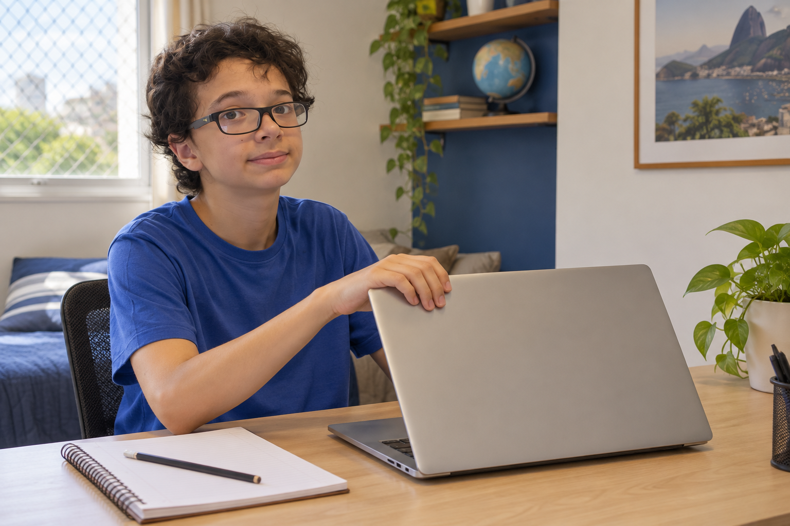
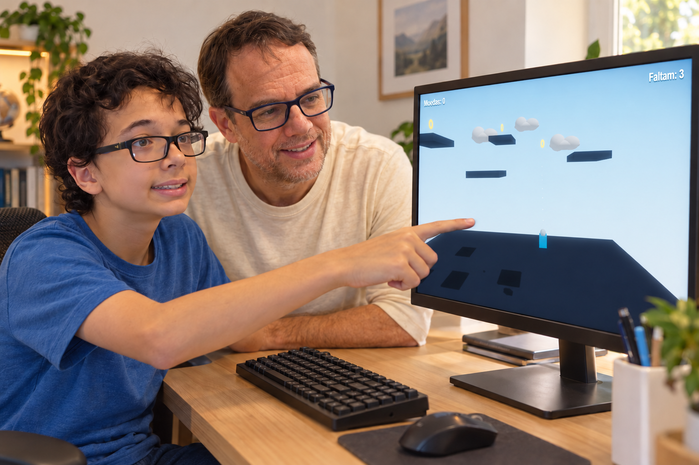
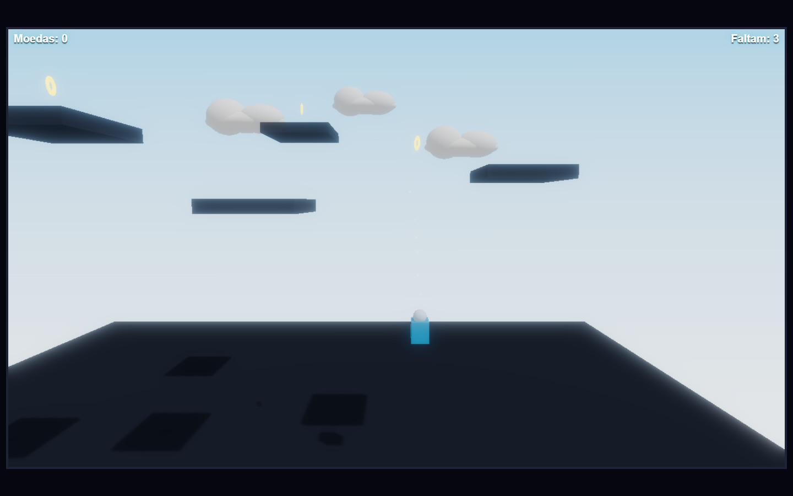
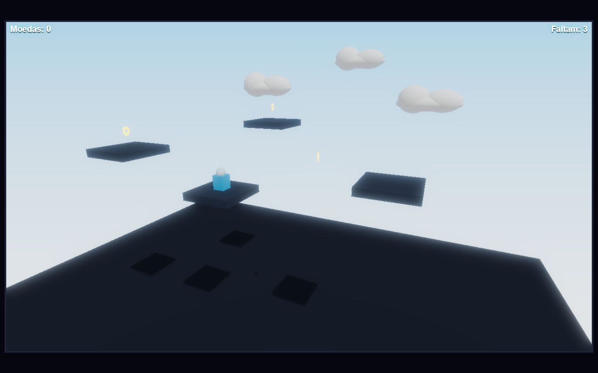
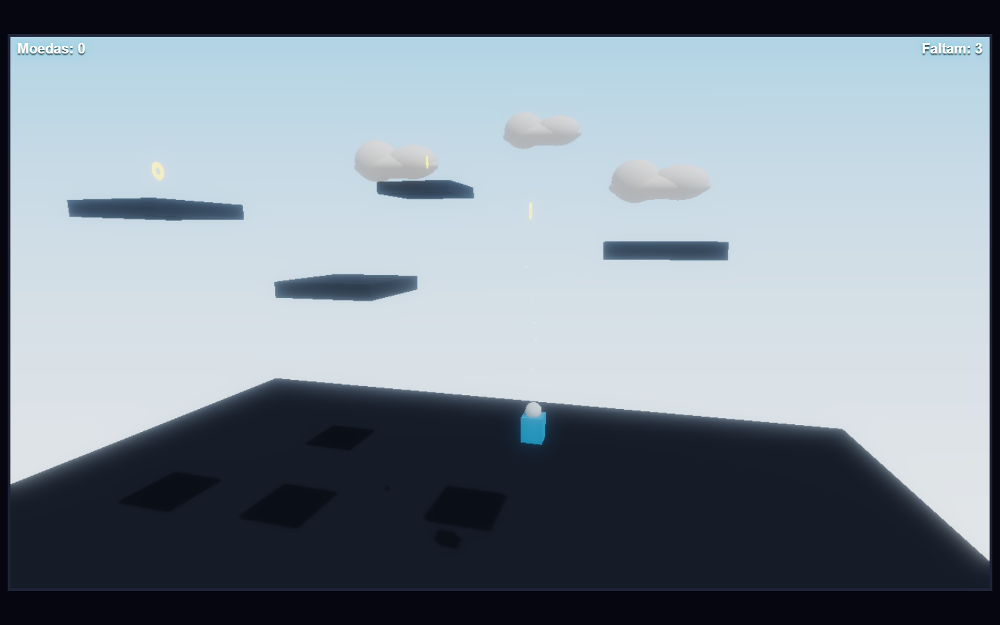
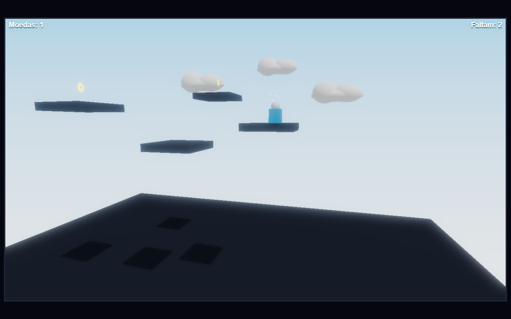
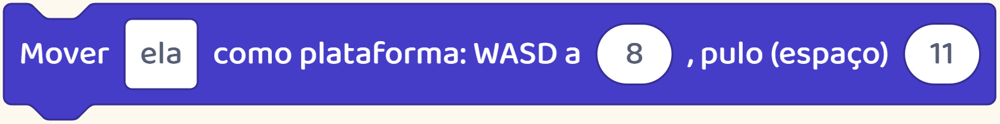
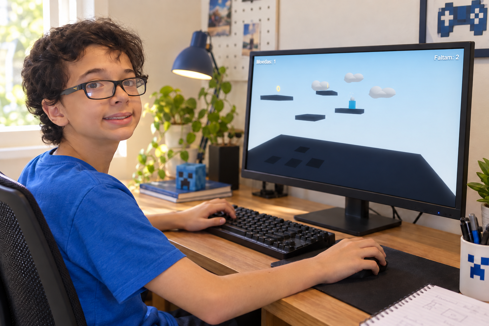

CRIE COM HELENA E JÚLIO01 / 07Tradução de criança“Nada funciona”, ele diz, e fecha o notebook.Antes de pedir que tente de novo, ajude seu filho a descobrir o que deu errado.
CRIE COM HELENA E JÚLIO02 / 07Quando ele diz “nada funciona”, você ainda não sabe onde ajudar.Peça: “Me mostra o que você queria fazer e o que aconteceu.”
CRIE COM HELENA E JÚLIO03 / 07Ao criar um jogo, seu filho pode praticar isso: olhar para o que falhou.Neste exemplo, o personagem pula, mas não chega à próxima plataforma.
CRIE COM HELENA E JÚLIO04 / 07Agora dá para pensar em duas mudanças: fazer o personagem pular mais longe ou deixar a plataforma mais perto.DistânciaForça do puloVamos testar só uma delas.
CRIE COM HELENA E JÚLIO05 / 07A gente deixou a plataforma mais perto e testou o mesmo pulo.Mais longeMais pertoDessa vez, o personagem chegou e pegou a moeda. Bastou mudar essa parte do jogo.
CRIE COM HELENA E JÚLIO06 / 07É isso que seu filho pratica ao criar jogos: entender o erro, escolher uma mudança e tentar de novo.Se estiver cansado, façam uma pausa e retomem depois.
CRIE COM HELENA E JÚLIO07 / 07Resolver um problema começa por entender o que deu errado.Siga @criecomhelenaejulio. Aqui mostramos como seu filho pode praticar isso criando os próprios jogos.